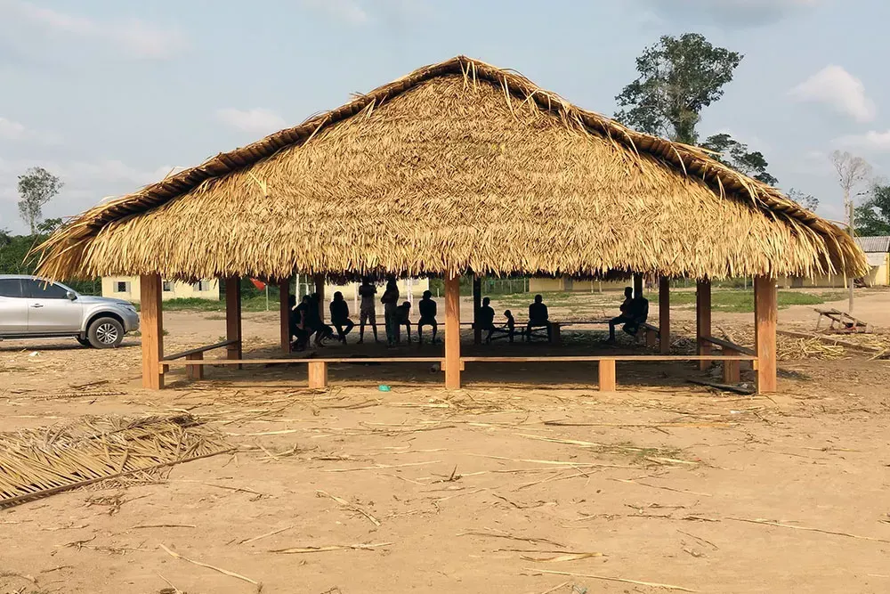
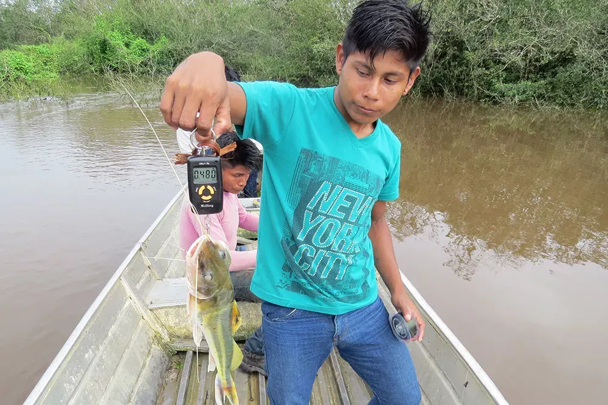
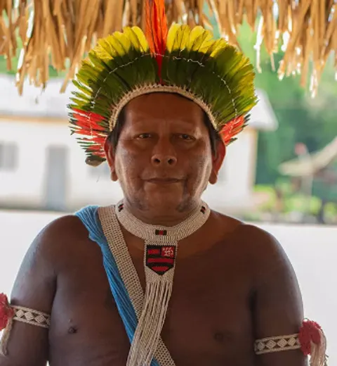

Cultura
Casa do Guerreiro
A construção da Ngàb, espaço político onde cada aldeia toma suas decisões.
Conheça o projeto
Cores dos pigmentos da pintura corporal, grafismos tirados do próprio logo, fotografia real do território e a voz da Associação. Tudo aqui é o CSS que o site usa hoje, nos dois idiomas.
Aldeia na TI Trincheira Bacajá, set/2026 · Foto: Ousadia Marketing para a Associação Berê Xikrin
Três cores carregam a marca. Pequi, arara e floresta entram como acento, um por vez. O urucum vivo é reservado para grafismo e ilustração.
| Par de texto aprovado | Contraste | Uso |
|---|---|---|
| jenipapo sobre palha | 16,5 : 1 | Corpo de texto |
| branco sobre urucum | 5,7 : 1 | Botão principal |
| palha sobre urucum | 5,0 : 1 | Bloco da newsletter |
| pequi sobre jenipapo | 10,5 : 1 | Números, títulos em seção escura |
| arara sobre branco | 10,1 : 1 | Links, foco |
| branco sobre floresta | 6,3 : 1 | Etiquetas |
| texto suave sobre palha | 6,9 : 1 | Legendas, apoio |
Proibido: pequi sobre branco ou palha (1,6 : 1) e urucum vivo atrás de texto pequeno.
As duas têm o subconjunto vietnamita do Google Fonts, que traz o “ẽ” de Mẽbêngôkre. Qualquer fonte nova precisa passar nesse teste.
Mẽbêngôkre titulo-lg · 36 a 68 px · página
Povo do buraco d’água titulo-md · 28 a 44 px · seção
Kukradjà · Ngàb · Kubengêt titulo-sm · 20 a 26 px · card
Organização indígena que reúne 16 aldeias Mẽbêngôkre-Xikrin da Terra Indígena Trincheira Bacajá. lead · 18 a 22 px · abertura de seção
Os Xikrin se autodenominam Mẽbêngôkre, “povo do buraco d’água”. A relação com a água está no centro da cultura. corpo · 17 px · entrelinha 1,65 · até 68 caracteres por linha
Rótulo de seção eyebrow · 13 px · caixa alta · com a seta do “R”
Os padrões vêm do selo e do “R” do logo e foram validados pela Associação em 13/10/2026. Desde 14/10 o grafismo aparece só como marca d’água e como marcador. As faixas entre seções foram aposentadas.
Marca d’água em seção clara
Marca d’água em seção escura
Marcador de lista
Rótulo de seção
Seta em zigue-zague do “R”Não fazer: grafismo cheio atrás de texto, mais de 7% de opacidade como textura, grafismo esticado (sempre por máscara CSS, repetido) ou padrões de outros povos.
Botões e etiquetas · claro
Botões · escuro e sobre foto
Card de projeto

A construção da Ngàb, espaço político onde cada aldeia toma suas decisões.
Conheça o projeto
Jovens de cinco aldeias registram os peixes do Rio Bacajá.
Conheça o projetoCard de notícia: sem foto, com categoria e data.
Números com fonte
Todo número leva fonte e data. Números de área ficam fora do site.
Citação com nome
“Penso que se a mata vai sumindo, nosso futuro some também.”Beptok Xikrin, aldeia Pytakô · Plano de Vida Xikrin, 2021
Aviso de página em construção
Página em construção. Usado só onde falta material da Associação.
Ficha de projeto
Frentes e governança
Linha do tempo
Fundação da Associação na Ngàb da aldeia Krãnh.
Contrato do Restaura Amazônia assinado em 2 de setembro.
Cartões da diretoria · com foto ou iniciais, mesma altura

Galeria · abre em tela cheia com legenda, setas e Esc
Glossário · termos em Mẽbêngôkre marcados com lang="txu"
O cabeçalho fixa no topo e tem o seletor PT · EN, que leva à página equivalente no outro idioma. No celular, o menu vira gaveta. Toda página interna abre com foto escurecida, trilha e título.
Baseado no Panorama da Coordenação do projeto (25/09/2026). Vale para português e inglês.
| Preferir | Evitar |
|---|---|
| Povo Mẽbêngôkre-Xikrin, Xikrin do Bacajá, aldeias, Terra Indígena | “Índio”, “tribo”, “aldeia indígena” genérica |
| Voz da Associação; falas com nome, aldeia e autorização | Falar pelos Xikrin na primeira pessoa |
| Protagonismo, autonomia, saber tradicional junto com técnica | “Salvar a Amazônia”, “dar voz”, “ajudar os indígenas”, “vulnerabilidade” |
| Mudanças reais: floresta de pé, renda da floresta, decisões das aldeias | Contagens de entrega como resultado; números de área antes do diagnóstico |
| 16 aldeias da Associação Berê | Confundir com as 53 aldeias da TI |
| Termos em Mẽbêngôkre conferidos com Kroire Xikrin, mantidos no original também em inglês | Traduzir ou criar palavras em Mẽbêngôkre |
Real, do território e das atividades, com termo de uso de imagem e crédito. Texto alternativo descritivo em toda foto.
Texto novo sobre cultura só vai ao ar depois da Associação. Material do Restaura passa pela Coordenação e, quando for o caso, pela CI.
Português na raiz, inglês em /en/. Toda mudança em um idioma tem a equivalente no outro.
| Arquivo | O que guarda |
|---|---|
design-system/tokens.css | Cores, fontes, tamanhos, espaços, raios e os grafismos como variáveis |
design-system/componentes.css | Botões, etiquetas, cards, números, listas, citação, rótulo |
app/globals.css | Cabeçalho, rodapé, newsletter, marca d’água, galeria, diretoria, glossário, linha do tempo |
design-system/grafismos/*.svg | Grafismos vetoriais derivados do logo (usados como máscara) |
Logo/leves/ | Logo em PNG e WebP, versão negativa, ícones e avatar |
scripts/gera-variantes.cjs · gera-og.cjs | Fotos responsivas (640, 960, 1280 px) e imagens de compartilhamento JPG 1200×630 |